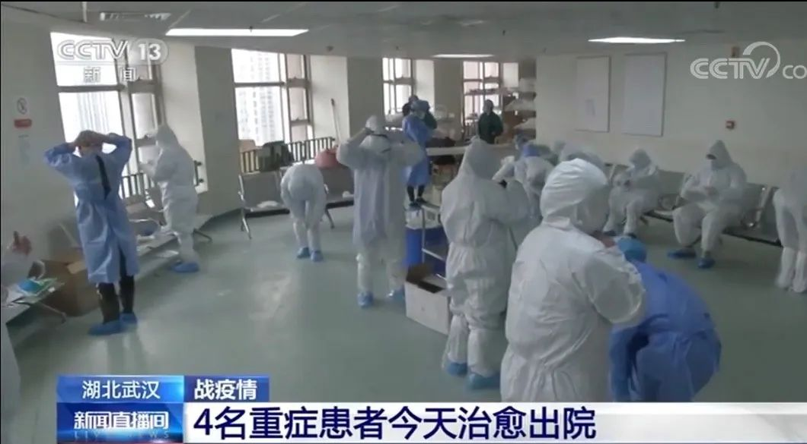

特稿|仁心赴国难 全国医护殉职已达26位(更新)
原文链接 备份链接 【财新网】（记者 吴红毓然 王梦遥 杨睿 冯华妹 唐爱琳 苑苏文）又有医生在抗击疫情前线不幸染上新冠肺炎去世。3月3日中午12时，武汉市中心医院眼科副主任、主任医师梅仲明，感染新冠肺炎去世，得年57岁。武汉市中心医院已 …

梅仲明可能并不知道这种传染病的危害
也没做很好的防护


武汉市中心医院医护人员参加抗击新冠疫情。（图片来源：央视截屏）
今天下午，武汉市中心医院发布公告称，该院眼科副主任、主任医师梅仲明，在抗击新冠肺炎疫情工作中不幸染病，经全力抢救无效，于2020年3月3日中午12时在武汉市金银潭医院去世，享年57岁。
梅仲明是此前去世的中心医院医生李文亮同科室的同事，这也是该医院自疫情暴发以来痛失的第三名医生。
网上传出门牌上写着“主任梅仲明，医师李文亮”的照片，展示的场景正是李文亮与梅仲明生前在武汉中心医院南京路院区的办公室。
医院公告称，梅仲明1962年11月29日出生于湖北省武汉市。1986年7月从中山医科大学临床医学专业毕业后，一直在武汉市中心医院眼科工作。梅仲明从医30余年，工作认真负责，对患者耐心细致，为学科建设发展作出重要贡献。公开资料显示，梅仲明生前担任湖北省眼科学会委员、武汉市眼科学会委员、湖北省防盲专家小组成员。有数千例白内障超声乳化吸出术及人工晶体植入术经验。擅长青光眼、白内障、眼后段等疾病的诊断、治疗，是香港“健康快车”武汉站的主要手术者之一，曾荣获武汉市“光明特使”称号。

武汉市中心医院的医生刘嘉敏称，梅仲明在李文亮感染后不久即出现症状，患病后也没有好好休息，还给其他患者开刀做了手术。她推测，当时，梅仲明可能并不知道这种传染病的危害，也没做很好的防护。
刘嘉敏说，梅仲明在住院后辗转了多个地方接受治疗，起初，他在医院南京路院区的综合科病房住院，之后转移到南京路院区呼吸科的隔离病房，再被转移到汉口医院、中心医院后湖院区呼吸科监护室继续治疗。李文亮去世后，梅仲明到金银潭医院接受救治。
李浩是武汉中心医院的一名护士，在后湖院区没有成为发热病人定点收治医院时，曾去汉口医院支援。1月24日大年三十晚上，他在汉口医院见到了正在住院的梅仲明，同病房还有另外两名中心医院的职工，这是李浩第一次见到梅仲明，也是最后一次。李浩称，当时感觉梅仲明呼吸比较困难，当晚12点左右，梅仲明被转往后湖院区。李浩帮着梅仲明洗碗、收拾行李、再将其扶至轮椅送出病区，在他印象里，感觉梅仲明是做事很有条理的人，也热爱生活，会自己带着电饭煲热饭。
在刘嘉敏的印象中，梅仲明人很好、低调，踏踏实实工作，身体结实，很少得病。2000年前后举行的香港“健康快车”武汉站活动中，梅仲明曾给很多经济条件不好的白内障患者开刀，费用很便宜，救了很多人。
梅仲明是中心医院继眼科医生李文亮，以及甲状腺乳腺外科党支部书记、主任、主任医师、中国医师奖获得者江学庆之后第三位因感染新冠肺炎去世的医生。年仅34岁的李文亮经全力抢救无效，于2020年2月7日凌晨2点58分去世。江学庆于2020年3月1日凌晨5点32分去世，享年55岁。
另据《中国新闻周刊》了解，武汉市中心医院多名科室主任在新冠肺炎疫情中出现感染。心胸外科一名副主任医师以及一名泌尿外科副主任医师过去两天因为病情较重都被相继转往华中科技大学附属同济医院中法新城院区救治，其中，泌尿外科副主任医师正在准备接受肺移植。
（文中刘嘉敏、李浩为化名）
值班编辑：俞杨
推荐阅读
▼


封面报道
《新冠病毒——我们要付出多大代价》
《围城之战——我们如何过关》
《武汉攻坚——我们如何与疫情赛跑》
《防控之辨——我们怎样科学应对》
***点击下图，一键下单***

* *
*

原文链接 备份链接 【财新网】（记者 吴红毓然 王梦遥 杨睿 冯华妹 唐爱琳 苑苏文）又有医生在抗击疫情前线不幸染上新冠肺炎去世。3月3日中午12时，武汉市中心医院眼科副主任、主任医师梅仲明，感染新冠肺炎去世，得年57岁。武汉市中心医院已 …
原文链接 备份链接 *************▲*************2020年2月8日，武汉中心医院后湖院区外墙上贴着李文亮的照片，地上摆满人们送来的鲜花。 （受访者供图/图） 全文共6660字，阅读大约需要14分钟。 “我觉得 …
原文链接 备份链接 武汉中心医院眼科医生李文亮（1986-2020）（资料图/图） 全文共*5612*字，阅读大约需要14分钟。 李文亮还活着吗？李文亮抢救过来了吗？这位武汉眼科医生的命运，在这个深夜牵动着很多人的心。直到凌 …
原文链接 备份链接 澎湃新闻记者 陈绪厚 不幸的消息再次传来。武汉市中心医院3月1日上午发布公告：武汉市中心医院甲状腺乳腺外科党支部书记、主任、主任医师、中国医师奖获得者江学庆同志， 在抗击新冠肺炎疫情工作中不幸染病，经全力抢救无效，于3 …
原文链接 备份链接 澎湃新闻记者 蒋子文 此前带队参与武汉火神山医院建设工作的程曦被火线提拔为武汉建工集团（以下简称“武建集团”）副总经理。 据《长江日报》报道称，为鼓励干部在重大事件和困难时期敢于担当，勇于战斗，为国为民冲锋陷阵，同时， …